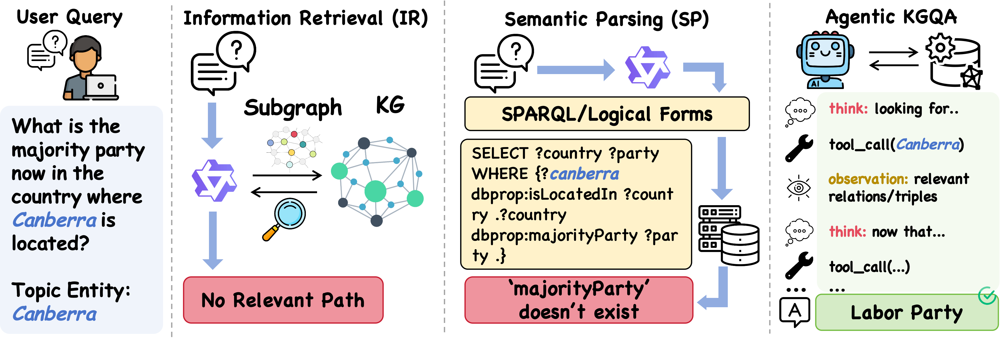
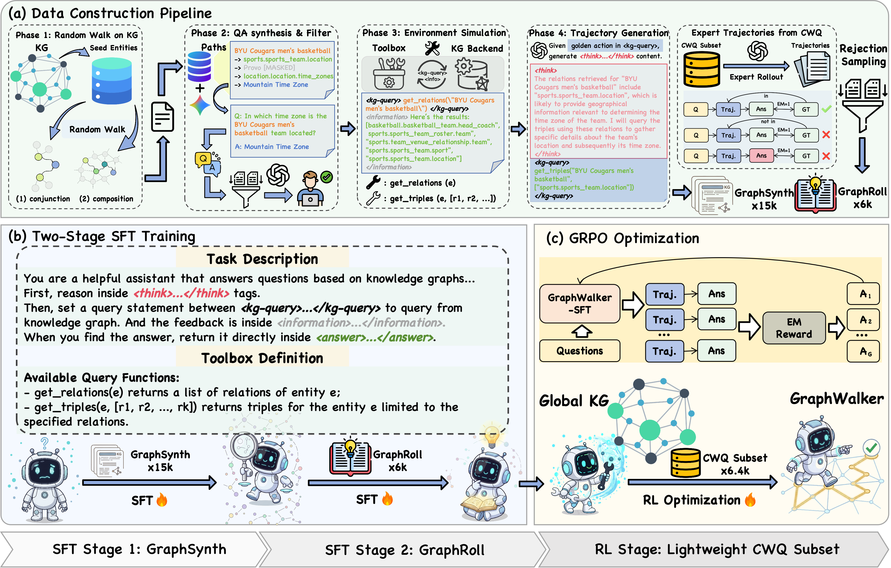
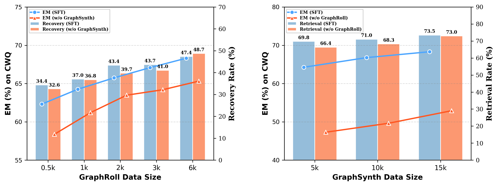
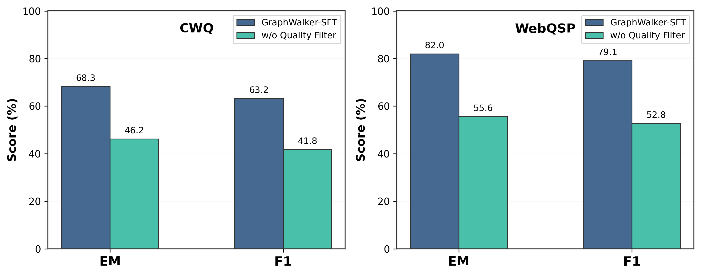
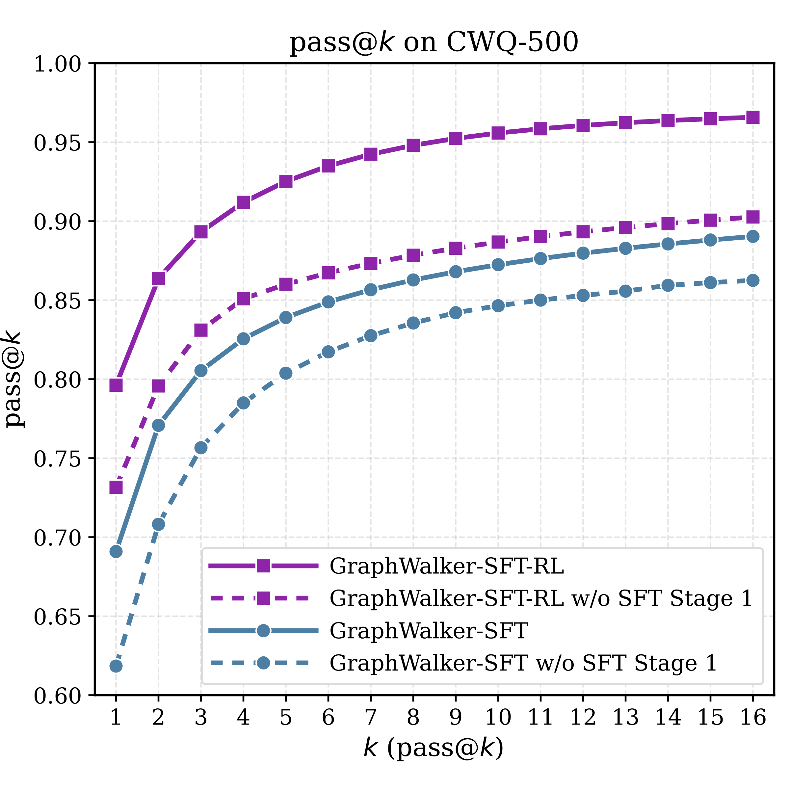
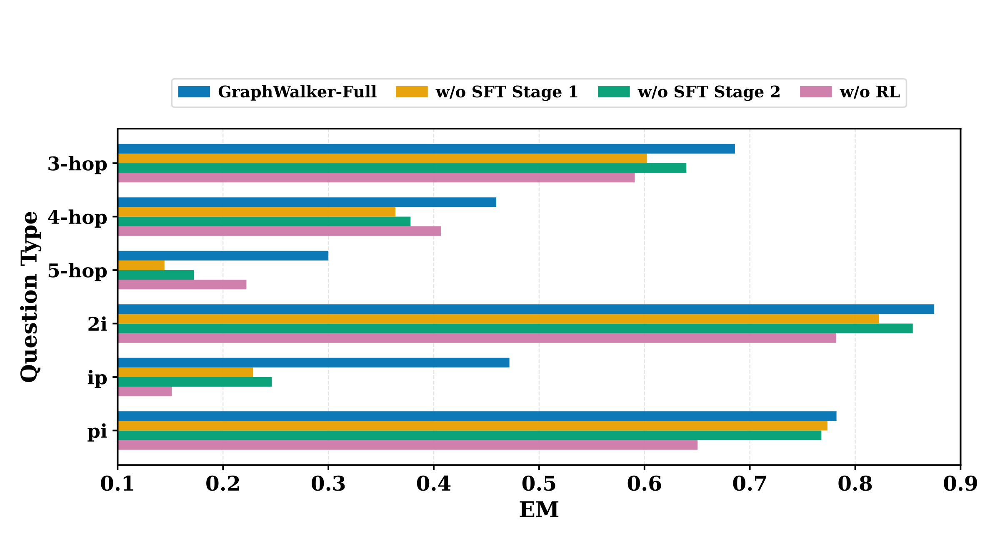
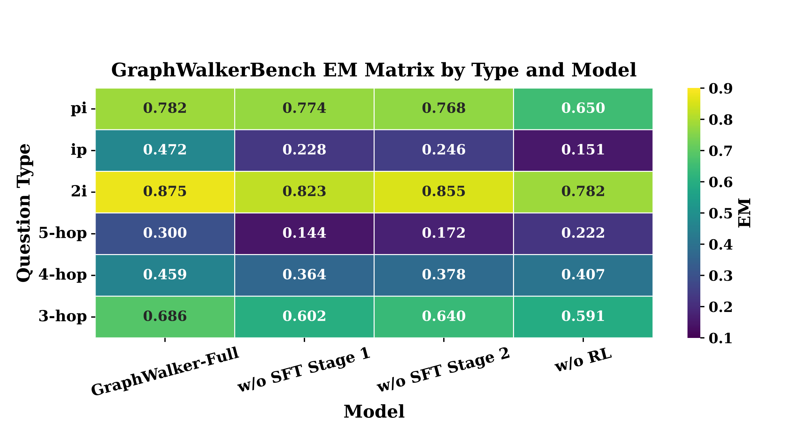
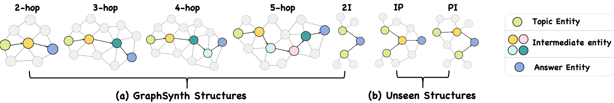
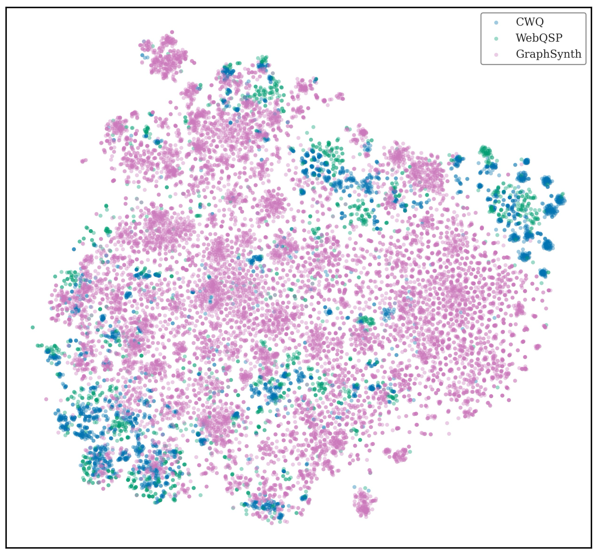
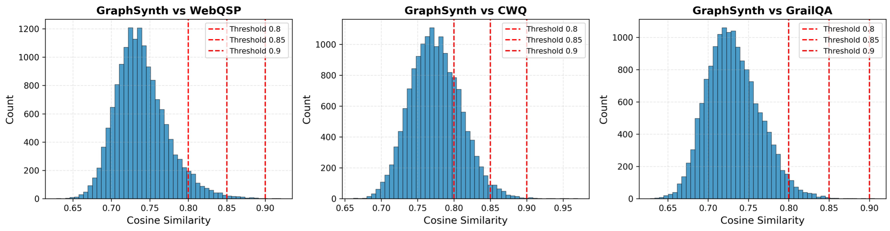

GraphSynth
Constrained random walks generate 2–5 hop composition chains and conjunction graphs. Questions are synthesized and semantically filtered before KG feedback and agent reasoning are assembled into 15K diverse interaction trajectories.
1 School of Artificial Intelligence, University of Chinese Academy of Sciences
2 The Key Laboratory of Cognition and Decision Intelligence for Complex Systems,
Institute of Automation, Chinese Academy of Sciences
3 Department of Electronic Engineering, Tsinghua University
xushuwen23@mails.ucas.ac.cn · {yao.xu, jzhao, kliu}@nlpr.ia.ac.cn
Accepted at the Conference on Language Modeling (COLM), 2026

Comparison of three KGQA paradigms. Information Retrieval (IR) methods retrieve a fixed subgraph, while Semantic Parsing (SP) methods translate questions into executable logical forms. GraphWalker instead enables an agent to autonomously navigate the global knowledge graph through iterative tool calls and live environmental feedback, improving generalization to unseen reasoning structures.
Agentic knowledge graph question answering (KGQA) requires an agent to iteratively interact with knowledge graphs (KGs), posing challenges in both training data scarcity and reasoning generalization. Specifically, existing approaches often restrict agent exploration: prompting-based methods lack autonomous navigation training, while current training pipelines usually confine reasoning to predefined trajectories. To this end, this paper proposes GraphWalker, a novel agentic KGQA framework that addresses these challenges through Automated Trajectory Synthesis and Stage-wise Fine-tuning. GraphWalker adopts a two-stage SFT training paradigm: First, the agent is trained on structurally diverse trajectories synthesized from constrained random-walk paths, establishing a broad exploration prior over the KG; Second, the agent is further fine-tuned on a small set of expert trajectories to develop reflection and error recovery capabilities. Extensive experiments demonstrate that our stage-wise SFT paradigm unlocks a higher performance ceiling for a lightweight reinforcement learning (RL) stage, enabling GraphWalker to achieve state-of-the-art performance on CWQ and WebQSP. Additional results on GrailQA and our constructed GraphWalkerBench confirm that GraphWalker enhances generalization to out-of-distribution reasoning paths.
GraphWalker builds a robust exploration foundation before reinforcement learning, allowing a compact agent to navigate vast, noisy, global knowledge graphs.

Constrained random walks generate 2–5 hop composition chains and conjunction graphs. Questions are synthesized and semantically filtered before KG feedback and agent reasoning are assembled into 15K diverse interaction trajectories.
Outcome-based rejection sampling collects 6K expert trajectories. These examples explicitly teach reflection, backtracking, and recovery from uninformative observations or dead ends.
Stage 1 learns broad exploration; Stage 2 learns reliable recovery. GRPO then optimizes long-horizon decisions with only a sparse trajectory-level exact-match reward.
At every step, the agent reasons over the question and its interaction history, queries the global KG, observes live evidence, and either continues exploring or returns a grounded answer.
<think>plan & reflect→<kg-query>get relations / triples→<information>KG feedback→<answer>Performance comparison (in percentage) of KGQA methods on CWQ and WebQSP. Results report Exact Match (EM) and F1; bold and underline indicate the best and second-best results, respectively. † denotes models evaluated under the GraphWalker interaction framework with access to the full global KG rather than pre-extracted subgraphs.
| Method | Backbone | CWQ | WebQSP | ||
|---|---|---|---|---|---|
| EM | F1 | EM | F1 | ||
| Vanilla LLMs | |||||
| IO Prompt | Qwen2.5-3B-Instruct | 22.0 | 17.7 | 44.6 | 30.3 |
| IO Prompt | Qwen2.5-7B-Instruct | 25.7 | 20.7 | 50.9 | 33.2 |
| IO Prompt | GPT-4o-mini | 45.5 | 33.6 | 47.1 | 39.3 |
| IO Prompt | DeepSeek-V3.2 | 50.1 | 43.5 | 63.8 | 55.7 |
| Agentic KGQA Methods | |||||
| RoG | LLaMA-2-7B-Instruct | 62.6 | 56.2 | 85.7 | 70.8 |
| ToG | GPT-4 | 69.5 | — | 81.9 | — |
| ToG-2.0 | GPT-3.5 | 68.9 | 65.8 | 77.8 | 74.5 |
| GoG | GPT-4 | 75.2 | — | 84.4 | — |
| KBQA-o1 | LLaMA3.1-8B-Instruct | — | — | 75.8 | 82.1 |
| KG-Agent | LLaMA2-7B-Instruct | 72.2 | 69.8 | 83.3 | 81.0 |
| † KG-R1 | Qwen2.5-3B-Instruct | 66.8 | 61.7 | 82.1 | 78.9 |
| GraphWalker (Ours) | |||||
| † Vanilla Agent | Qwen2.5-7B-Instruct | 40.7 | 33.2 | 68.4 | 66.1 |
| † Vanilla Agent | GPT-4o-mini | 63.4 | 60.3 | 79.6 | 70.6 |
| † Vanilla Agent | DeepSeek-V3.2 | 69.8 | 63.5 | 76.7 | 71.8 |
| GraphWalker-7B-SFT | Qwen2.5-7B-Instruct | 68.3 | 63.2 | 82.0 | 79.1 |
| GraphWalker-3B-SFT-RL | Qwen2.5-3B-Instruct | 70.9 | 65.2 | 83.5 | 81.7 |
| GraphWalker-8B-SFT-RL | LLaMA3.1-8B-Instruct | 78.5 | 69.6 | 88.2 | 84.5 |
| GraphWalker-7B-SFT-RL | Qwen2.5-7B-Instruct | 79.6 | 74.2 | 91.5 | 88.6 |
Complex reasoning. GraphWalker-7B surpasses GPT-4-powered GoG by 4.4 EM on CWQ and KG-Agent by 7.4 EM.
Cross-task transfer. Trained solely on CWQ, GraphWalker reaches 91.5 EM on WebQSP without task-specific training.
Efficient scaling. Even the 3B variant outperforms KG-R1 with the same backbone by 4.1 EM on CWQ.
The complete ablations from the paper isolate the contribution of each SFT stage, RL, training order, and quality-control component.
Table 2. Zero-shot performance on GrailQA and GraphWalkerBench. GraphWalkerBench evaluates structurally diverse reasoning paths, including patterns unseen in GraphSynth. The table reports the effect of removing either SFT stage or RL on out-of-distribution generalization.
| Method | GrailQA | GraphWalkerBench | Δ avg. EM | ||
|---|---|---|---|---|---|
| EM | F1 | EM | F1 | ||
| GraphWalker-Full | 86.3 | 84.4 | 63.5 | 60.8 | — |
| w/o SFT Stage 1 | 80.9 | 78.0 | 55.3 | 52.4 | −6.80 |
| w/o SFT Stage 2 | 74.3 | 69.7 | 53.3 | 49.5 | −11.10 |
| w/o RL | 79.4 | 76.3 | 49.7 | 47.0 | −10.35 |
Table 3. Ablation study on CWQ and WebQSP. Removing GraphSynth, GraphRoll, or RL isolates the contribution of each stage. Mixed-SFT+RL combines GraphSynth and GraphRoll in a single SFT pass with identical data, testing whether the proposed training order is essential.
| Method | CWQ | WebQSP | Δ avg. EM | ||
|---|---|---|---|---|---|
| EM | F1 | EM | F1 | ||
| GraphWalker-Full | 79.6 | 74.2 | 91.5 | 88.6 | — |
| w/o SFT Stage 1 | 75.2 | 70.4 | 85.7 | 82.5 | −5.10 |
| w/o SFT Stage 2 | 72.3 | 66.3 | 80.8 | 77.5 | −9.00 |
| w/o SFT | 70.6 | 66.0 | 79.8 | 75.6 | −10.35 |
| w/o RL | 68.3 | 63.2 | 82.0 | 79.1 | −10.40 |
| Mixed-SFT+RL | 70.2 | 64.2 | 80.1 | 75.8 | −10.40 |
Table 4. LLM-based Relation Reranking Ablation Study. The best and second-best results are shown in bold and underlined, respectively. Top-20 achieves the best overall balance between recalling crucial relations and avoiding distracting context noise.
| Setting | CWQ | WebQSP | ||
|---|---|---|---|---|
| EM | F1 | EM | F1 | |
| w/ reranking · Top-20 | 79.6 | 74.2 | 91.5 | 88.6 |
| w/ reranking · Top-10 | 78.4 | 73.5 | 89.4 | 86.1 |
| w/ reranking · Top-15 | 78.7 | 74.6 | 89.8 | 86.5 |
| w/ reranking · Top-30 | 76.9 | 72.0 | 87.0 | 84.4 |
| w/o reranking | 74.8 | 70.1 | 87.0 | 82.2 |
The two-stage curriculum is not merely additional data: its ordering establishes complementary exploration and recovery capabilities that enable effective RL.


Beyond final accuracy, the paper studies whether synthetic trajectories actually broaden search, support unseen structures, and teach distinct capabilities at each stage.
We sample 500 CWQ test questions and evaluate Pass@k over 32 runs. Removing Stage 1 consistently reduces Pass@k in both SFT-only and SFT-RL settings. Models trained with GraphSynth continue finding new successful trajectories as k grows, while GraphWalker-SFT-RL achieves the strongest curve throughout.

GraphWalkerBench contains 1,766 queries: 736 multi-hop compositions and 1,030 conjunctions. IP and PI are unseen conjunction structures absent from GraphSynth training, making the benchmark a focused test of topological generalization.


GraphSynth is designed for both structural breadth and semantic coverage, while strict filtering keeps the curriculum grounded and clean.

GraphSynth recombines predicates and entities from CWQ, WebQSP, and GrailQA into novel paths. Questions are generated with masked intermediate entities, scored for path completeness, relevance, and semantic coherence, then executed against the global KG with realistic retrieval noise.

The arXiv version includes additional controls for retrieval quality, semantic contamination, and stage-wise training order.
BM25 retrieves candidates and a Qwen2.5-7B filter reranks them. Increasing the pool from 10 to 20 improves recall; Top-30 adds distracting context. Even without reranking, the framework remains competitive. The complete EM/F1 table is included in Ablation Tables.
Each synthetic question is compared with every test question in CWQ, WebQSP, and GrailQA using BGE-M3. Samples above the strict 0.85 cosine threshold are removed from the final corpus.

A CWQ example reveals the distinct behavior acquired at every stage: navigation, recovery, and finally efficient decision making.
“Where is the home stadium of the team who won the 1946 World Series championship?”
Initial entity: 1946 World SeriesSwitch between the three checkpoints from the paper appendix.
Navigation succeeds, but the final answer extracts the team instead of the stadium.
Since I need to determine the home stadium of the team that won the 1946 World Series, I will start by querying the relations for the entity “1946 World Series”. This will help me identify relevant connections to the winning team and its stadium.
get_relations("1946 World Series")sports.sports_championship_event.champion, sports.sports_championship_event.result, sports.sports_team.championships, time.event.locations, …
The champion relation is crucial for identifying the winning team. I will query the triples with the relevant relations to gather detailed information about the champion and its associated stadium.
get_triples("1946 World Series", ["sports.sports_championship_event.champion", "sports.sports_championship_event.result", "sports.sports_team.championships", "time.event.locations", …])[1946 World Series, champion, St. Louis Cardinals], [1946 World Series, result, 4–3], [1946 World Series, championship, World Series], [St. Louis Cardinals, championships, 1946 World Series]
I learned that the champion is the St. Louis Cardinals. To find the home stadium, I need to query the relations for “St. Louis Cardinals” and inspect its venue connections.
get_relations("St. Louis Cardinals")sports.sports_team.venue, sports.sports_team.arena_stadium, sports.sports_team.location, …
The arena_stadium relation is directly relevant. I will retrieve the triples to identify the specific stadium and distinguish it from other venues.
get_triples("St. Louis Cardinals", ["sports.sports_team.venue", "sports.sports_team.arena_stadium", "sports.sports_team.location", …])[St. Louis Cardinals, arena_stadium, Busch Stadium], [St. Louis Cardinals, arena_stadium, Roger Dean Stadium], [St. Louis Cardinals, location, St. Louis], …
The team has multiple venues listed, including Busch Stadium. I will further investigate Busch Stadium to confirm that it is the primary home venue.
get_relations("Busch Stadium")sports.sports_facility.home_venue_for, sports.sports_facility.teams, sports.sports_team.arena_stadium, …
The home_venue_for and teams relations can confirm the connection between Busch Stadium and the Cardinals. I will query these relations for verification.
get_triples("Busch Stadium", ["sports.sports_facility.home_venue_for", "sports.sports_facility.teams", "sports.sports_team.arena_stadium", …])[Busch Stadium, teams, St. Louis Cardinals], [St. Louis Cardinals, arena_stadium, Busch Stadium], …
["St. Louis Cardinals"]Correct evidence was found, but the model returned the team name instead of the stadium.
The model identifies the champion but stops after a misleading event-location observation.
To find the home stadium, I will start by querying the relations of the “1946 World Series” entity and look for information about the winning team.
get_relations("1946 World Series")sports.sports_championship_event.champion, sports.sports_championship_event.result, sports.sports_team.championships, time.event.locations, …
The champion relation should indicate which team won. I will retrieve the top relevant relations, including event locations.
get_triples("1946 World Series", ["sports.sports_championship_event.champion", "sports.sports_championship_event.result", "sports.sports_team.championships", "time.event.locations"])[1946 World Series, champion, St. Louis Cardinals], [1946 World Series, result, 4–3], [St. Louis Cardinals, championships, 1946 World Series], [1946 World Series, locations, Fenway Park], [1946 World Series, locations, Sportsman’s Park]
The champion is St. Louis Cardinals. Sportsman’s Park appears in the event locations and is in St. Louis, so I will conclude this is the home stadium.
["Sportsman's Park"]The model stops after two turns without exploring the team’s stadium relation.
RL consolidates exploration and recovery into the shortest grounded path.
To find the home stadium, I will start by querying the relations of the “1946 World Series” entity and look for the champion.
get_relations("1946 World Series")sports.sports_championship_event.champion, sports.sports_championship_event.result, sports.sports_championship_event.runner_up, …
The champion relation identifies the winning team. I will query it together with the runner-up and result for context, then continue from the champion entity.
get_triples("1946 World Series", ["sports.sports_championship_event.champion", "sports.sports_championship_event.runner_up", "sports.sports_championship_event.result"])[1946 World Series, champion, St. Louis Cardinals], [1946 World Series, runner_up, Boston Red Sox], [1946 World Series, result, 4–3], [1946 World Series, championship, World Series]
The champion is the St. Louis Cardinals. I will query this team’s relations to find its stadium directly.
get_relations("St. Louis Cardinals")sports.sports_team.venue, sports.sports_team.arena_stadium, sports.sports_team.location, …
The venue and arena_stadium relations are relevant. I will retrieve them to identify the current home stadium.
get_triples("St. Louis Cardinals", ["sports.sports_team.venue", "sports.sports_team.arena_stadium", "sports.sports_team.location"])[St. Louis Cardinals, arena_stadium, Busch Stadium], [St. Louis Cardinals, arena_stadium, Roger Dean Stadium], [St. Louis Cardinals, location, St. Louis], …
The results include Busch Stadium and Sportsman’s Park. Busch Stadium is mentioned as the current primary venue, so I will provide it as the grounded answer.
["Busch Stadium"]Correct answer with the shortest successful path.
If GraphWalker is useful in your research, please cite our paper.
@misc{xu2026graphwalkeragenticknowledgegraph,
title={GraphWalker: Agentic Knowledge Graph Question Answering via Synthetic Trajectory Curriculum},
author={Shuwen Xu and Yao Xu and Jiaxiang Liu and Chenhao Yuan and Wenshuo Peng and Jun Zhao and Kang Liu},
year={2026},
eprint={2603.28533},
archivePrefix={arXiv},
primaryClass={cs.CL},
url={https://arxiv.org/abs/2603.28533},
}